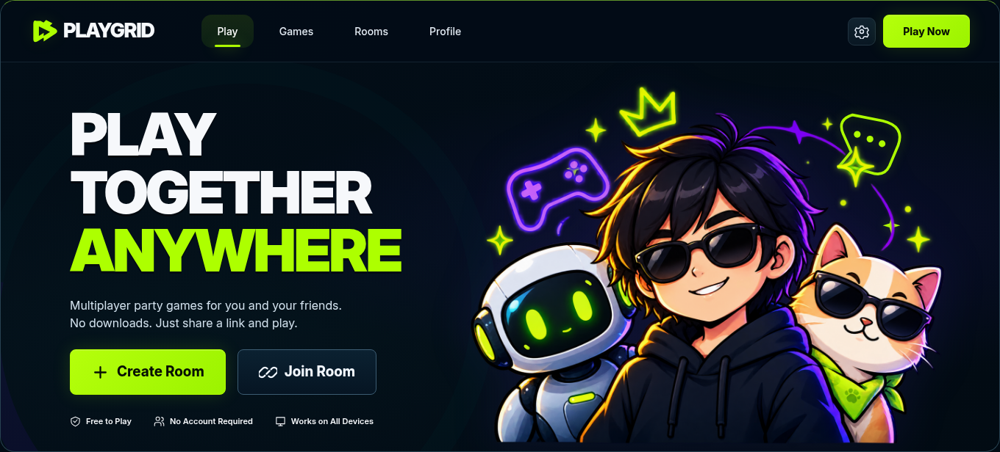
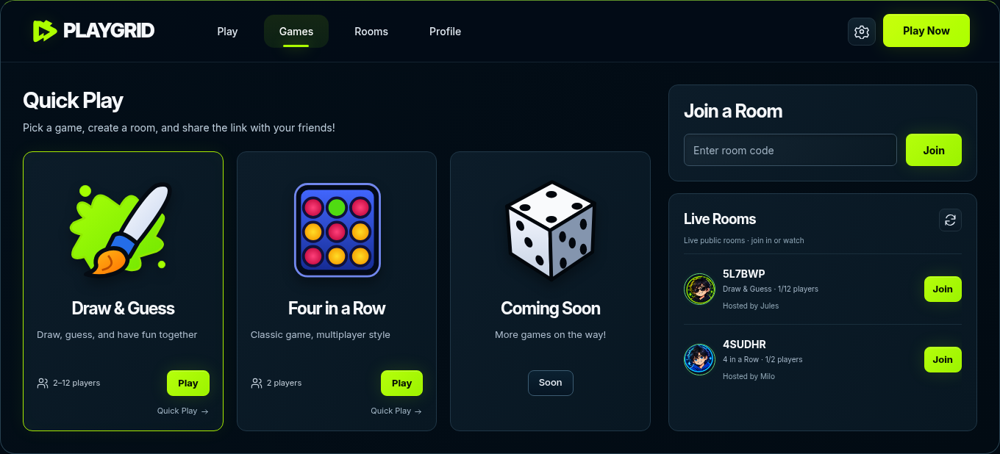
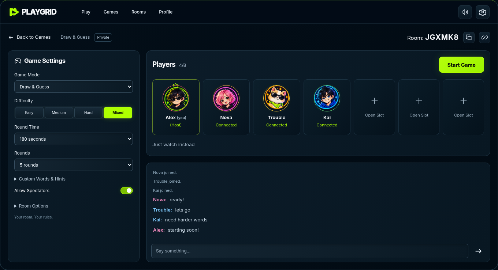
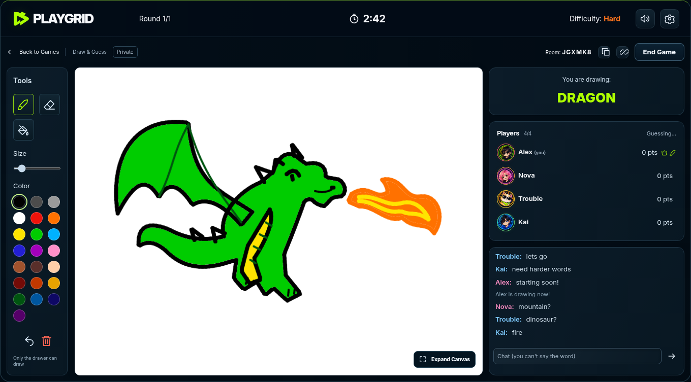
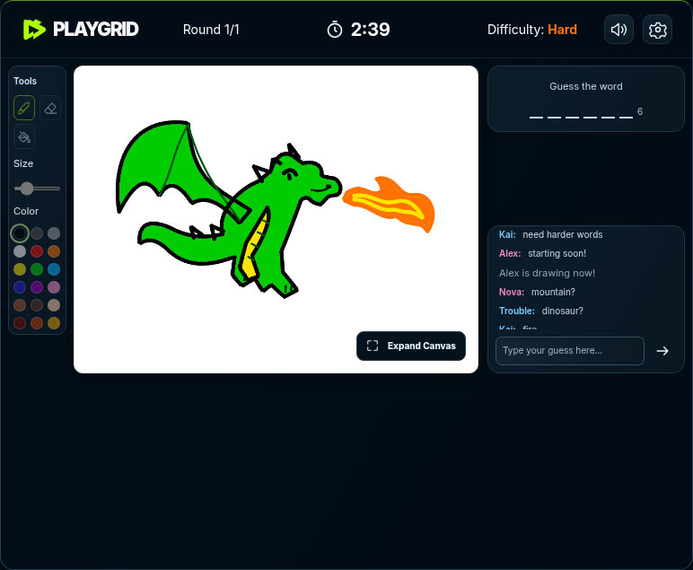
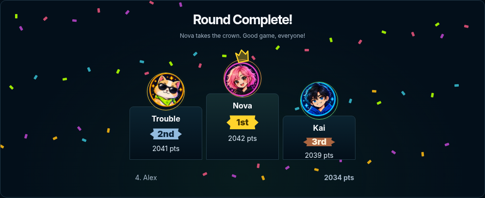
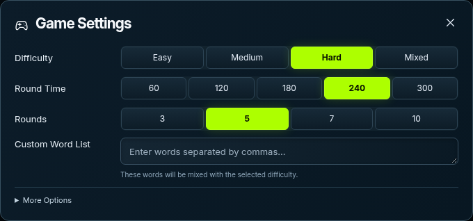

This sheet arranges captures of the running application; it is a review artifact, not an alternate app. Images are fitted without stretching. Open the full 390px portrait gameplay capture. Room codes, chat, drawings, and scores come from real test sessions.